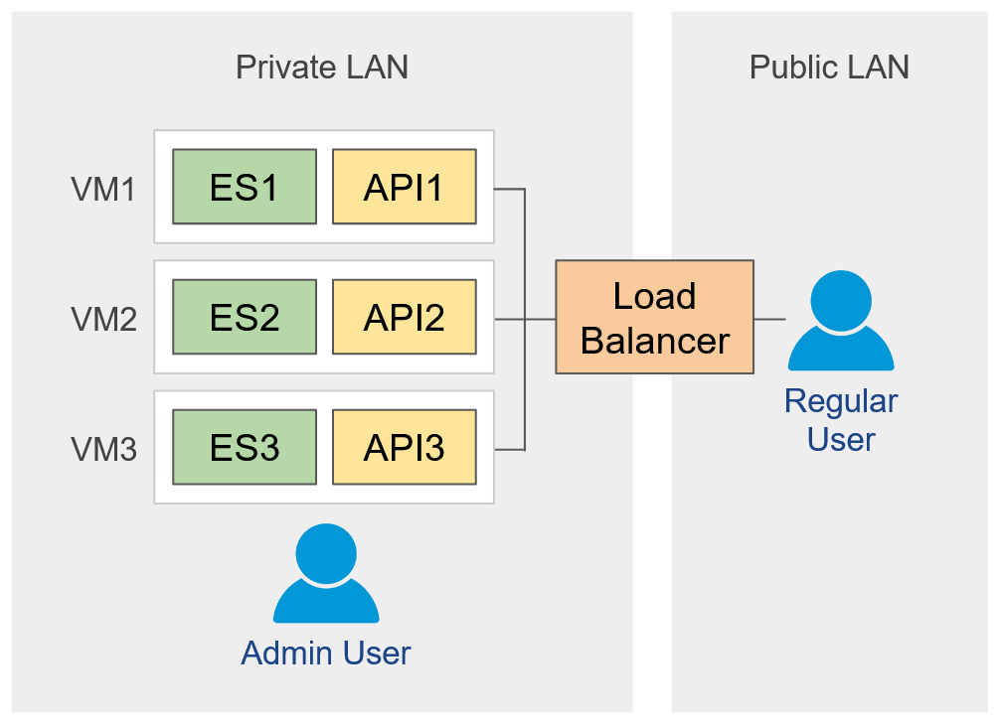
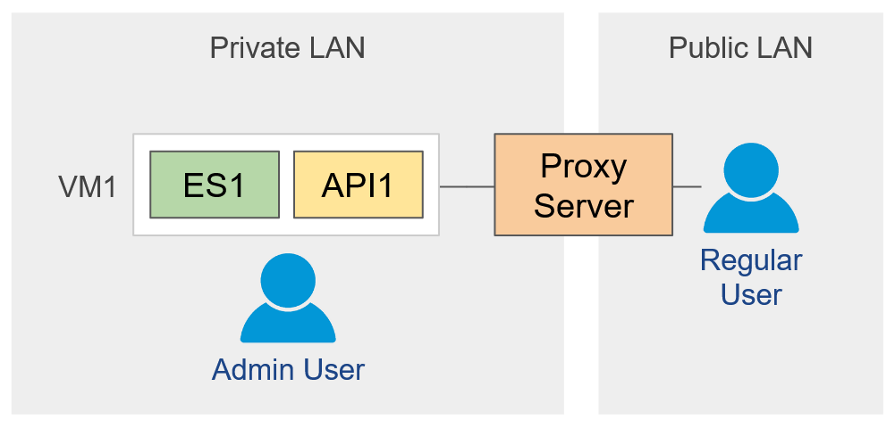

Production Deployment
Overview
Main components of multi-node cluster:
- Elasticsearch nodes - store PDS data and provide low level search API.
- API nodes - provide PDS registry API. Only API nodes are exposed to public network.
- Load balancer / proxy server - forwards user requests to API servers. Provides public HTTPS access point.

Nodes can be deployed in containers (Kubernetes) or VMs.
VMs
To reduce VM overhead you can deploy multiple nodes of different type (Elasticsearch, API) in the same VM. It is recommended to have 3 VMs for HA setup.
Minimal non-HA configuration can be deployed in a single VM.
Ports
- 8000 - API clients connect to this port
- 9200 - Elasticsearch clients connect to this port
- 9300 - Elasticsearch nodes communicate over this port